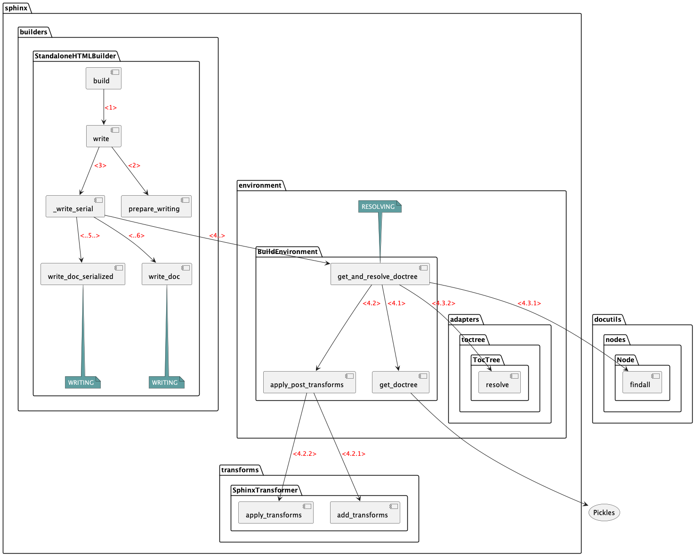
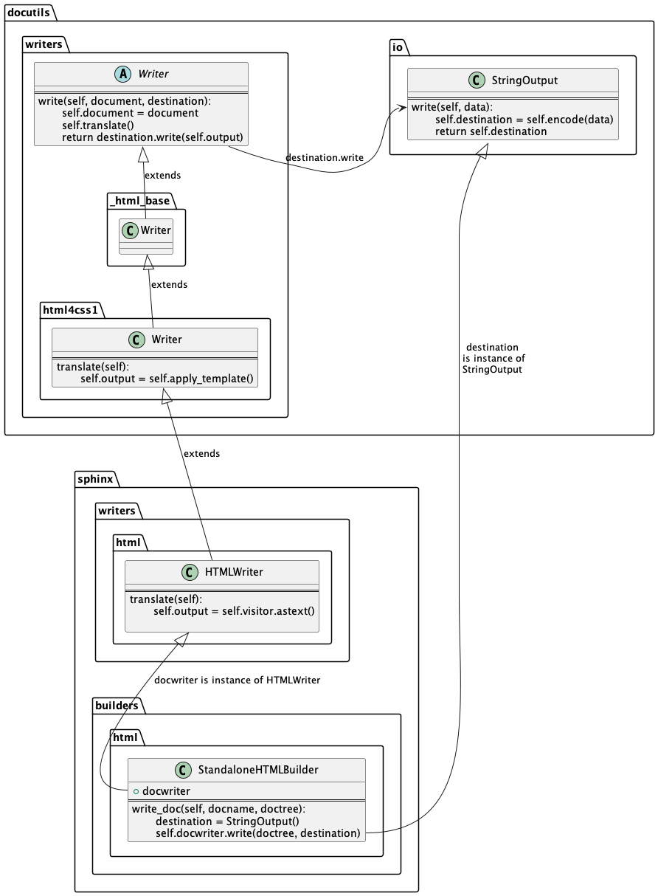

Warning
This draft documentation is under development.
Resolve and Write¶
Sphinx continues processing the parsed documents. It determines the final list of the documents to process and then implements RESOLVING and WRITING phases for each document.
Process¶
The main steps are presented on the following diagram:

Start the
app.builder.writemethod defined in thesphinx.builders.Builderclass. Its signature looks as follows:def write(self, build_docnames: Iterable[str], updated_docnames: Sequence[str], \ method: str = 'update') -> None: # NOQA
If you temporarily uncomment the print statement that follows the method definition, it will display the received arguments similar to the following:
build_docnames: {'folder1/index', 'folder2/index', 'index'} updated_docnames: ['folder1/index', 'folder2/index', 'index'] method: update
In this list:
build_docnamesis a list of names initially passed to thebuildmethod.updated_docnamesis a list of names generated by thereadmethod and extended with the names of the outdated documents.methoddefines the operation for theapp.builder.writemethod. If the method isupdate, theapp.builder.writemethod will unitebuild_docnamesandupdated_docnamesinto thedocnamesset and process the united set.
The method determines whether to process documents in parallel or sequentially. In this process the latter is used.
Call the
app.builder.prepare_writingto prepare the documentationCall the
app.builder._write_serialmethod passing it the list of documents generated in the previous step. The method processes all documents one by one in a cycle. To make the method display all files that it processes, add the-vargument to thesphinx-buildutility. Then you will see messages similar to these:writing output... [ 33%] folder1/index writing output... [ 66%] folder2/index writing output... [100%] index
For each document, the method turns on the RESOLVING phase, in which it runs the
env.get_and_resolve_doctree, and then the WRITING phase, in which it runs theapp.builder.write_doc_serializedandapp.builder.write_docmethods.Call the
app.env.get_and_resolve_doctreemethod passing it the document name and the reference to theapp.builderobject. This methods orchestrates the document parsing in the following order:Call the
app.env.get_doctreemethod passing the document name (docname) to it to find the pickled file and read the doctree from it.Call the
app.env.apply_post_transformsmethod passing the docname and doctree to it to resolve all pending references between the doctree nodes and convert images. To perform those operations, this method creates an object from a class extending thesphinx.transforms.SphinxTransformclass and calls subsequently itsadd_transformsandapply_transformsmethods. After processing the doctree, theapp.env.get_doctreemethod emits the ‘doctree-resolved’:self.events.emit('doctree-resolved', doctree, docname)
Note
This is where you can handle the ‘doctree-resolved’ event emitted by the
app.env.get_doctreemethod. A subscribed handler can make changes in the doctree.Call the
docutils.nodes.Node.findallmethod to get every doctree node and finally process it by creating an object from thesphinx.environment.adapters.toctree.TocTreeclass and calling itsresolvemethod.
Call the
app.build.write_doc_serializedmethod passing it the document name and itsdoctreedetermined in the previous step. The method performs the following actions:Call the class-level
post_process_imagesmethod of thesphinx.builders.Buildersclass to resolve URIs of the document images. The method saves the results in theapp.builder.imagesdictionary.Call the
app.builder.index_pageto add the document name and title to theapp.builder.indexerobject of thesphinx.search.IndexBuilderclass.
Call the
app.build.write_docmethod passing it the document name and itsdoctreeto finally define all document component and save it in its file. The method performs the following operations:Define the destination as an object of the
docutils.io.StringOutputclass, which is an output wrapper. The default destination path in this class is string:default_destination_path = '<string>'
Call the
app.builder.docwriter.writemethod to perform the document final translation to the specified language and to write it using the write method of theapp.builder.docwriterobject. The latter is an instance of thesphinx.writers.html.HTMLWriterclass which is included in a long inheritance chain as presented in Class inheritance Thewritemethod defined in thedocutils.writers.Writerabstract class runs translation of the doctree and runs thedestination.writemethod.Call the
app.builder.docwriter.assemble_partsmethod that creates theapp.builder.docwriter.partsdictionary.Call the
app.builder.get_doc_contextmethod to create the template context for the HTML page. The method returns the context of the following structure:{ 'parents': parents, 'prev': prev, 'next': next, 'title': title, 'meta': meta, 'body': body, 'metatags': metatags, 'rellinks': rellinks, 'sourcename': sourcename, 'toc': toc, # only display a TOC if there's more than one item to show 'display_toc': (self.env.toc_num_entries[docname] > 1), 'page_source_suffix': source_suffix, }
Call the
app.builder.handle_pagemethod to create and save the HTML page.
Class inheritance¶
In the write steps, the system uses complex class inheritance as displayed on the following diagram:

The app.builder.docwriter.write method is inherited from the docutils.writers.Writer abstract class.
To write the doctree, it calls destination.write method:
output = self.destination.write(self.output)
The destination object is an instance of the docutils.io.StringOutput class that defines its write method as:
def write(self, data):
"""Encode `data`, store it in `self.destination`, and return it."""
self.destination = self.encode(data)
return self.destination